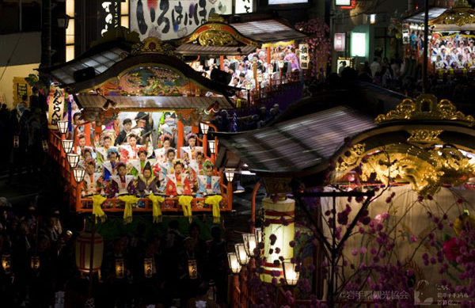
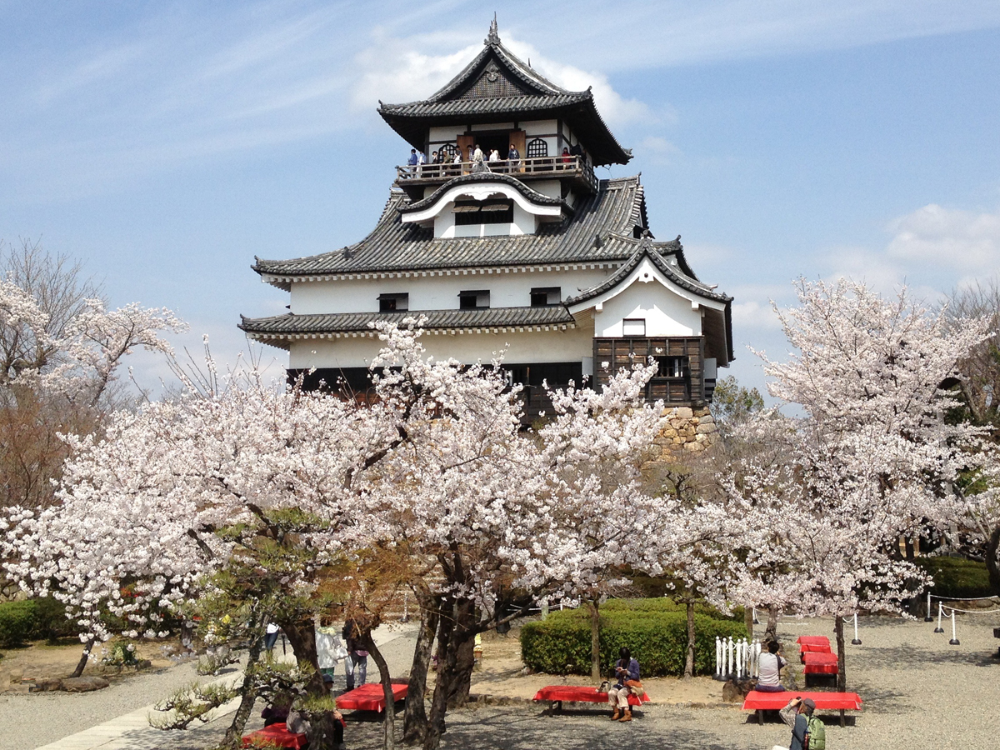

|
เป็นเทศกาลซึ่งเป็นสัญลักษณ์การสิ้นสุดของฤดูหนาวอันยาวนานของภูมิภาคโทโฮคุ จัดขึ้นทุกปีที่เขตมิสุซาวะ (Mizusawa-ku) เมืองโอชู (Oshu-shi) จังหวัดอิวะเตะ (Iwate) ในงานเทศกาลจะมีขบวนแห่รถที่เรียกว่าดาชิ (Dashi) ซึ่งบรรทุกคณะนักดนตรีจำนวนมาก โดยขบวนแห่นี้จะเคลื่อนตัวไปทั่วตามท้องถนนในเมือง ภาพอันสวยงามของรถดาชิที่เคลื่อนตัวไปในยามค่ำคืนพร้อมกับเสียงขลุ่ยและกลองอันไพเราะ จะทำให้ผู้ที่ได้เห็นรู้สึกราวกับอยู่ในอีกโลกหนึ่งเลยทีเดียว ระยะเวลาจัดงาน : ปลายเดือนเมษายน สถานที่จัดงาน : เขตมิสุซาวะ เมืองโอชู จังหวัดอิวะเตะ (Mizusawa-ku, Oshu-shi, Iwate) |
 |
|
ทุกๆ ปีจะมีผู้คนมาเที่ยวชมงานนี้มากถึง 1.5 ล้านคน ชาวเมืองผู้แข็งแรงและคึกคักมีชีวิตชีวาในละแวกนั้นจะมาช่วยกันแบกศาลเจ้าขนาดเล็ก (Mikoshi) จำนวน 3 หลังขึ้นบ่า และค่อยๆ เคลื่อนขบวนแห่นี้ไปในย่านอาซากุสะ (Asakusa) ดูทรงพลังน่าตื่นตาตื่นใจเป็นอย่างยิ่ง และยังมีการร่ายรำที่เรียกว่า “บินซาซาระ” (Binzasara Dance) ซึ่งเป็นการร่ายรำพร้อมเครื่องดนตรีโบราณที่ดูแปลกตาสำหรับนักท่องเที่ยว จึงแนะนำว่าไม่ควรพลาด นอกจากนี้ตามถนนหนทางก็จะเต็มไปด้วยร้านค้ารถเข็นเรียงรายอยู่มากมาย ให้ได้เลือกชิมกันอย่างสนุกสนานอีกด้วย ระยะเวลาจัดงาน : เดือนพฤษภาคม สถานที่จัดงาน : ศาลเจ้าอาซากุสะ (Asakusa Shrine) |
|
เป็นเทศกาลที่ประวัติศาสตร์เก่าแก่ยาวนานสืบเนื่องมาตั้งแต่ครึ่งหลังของศตวรรษที่ 16 และในช่วงวันหยุดเทศกาลสงกรานต์ของไทยนั้นจะตรงกับช่วงที่ดอกซากุระบนเขาทาคายามะซึ่งอยู่สูงจากระดับน้ำทะเลออกดอกสะพรั่งให้เราได้ชมพอดี ภาพขบวนแห่เกี้ยวหรือรถดาชิ (Dashi) ที่ค่อยๆ เคลื่อนตัวอ้อยอิ่งไปใต้ต้นซากุระที่ออกดอกบานสะพรั่งเต็มที่ช่างงดงามจับตา ทำให้เทศกาลนี้เป็นเทศกาลยอดนิยมที่สามารถดึงดูดนักท่องเที่ยวจากทั้งในและต่างประเทศให้มาเยือนเป็นจำนวนมาก ระยะเวลาจัดงาน : เดือนเมษายน สถานที่จัดงาน : Shiroyama, Takayama-shi, Gifu |
|  |
เทศกาลเก่าแก่ที่มีประวัติศาสตร์ยาวนานกว่า 370 ปี และได้รับการขึ้นทะเบียนเป็นมรดกทางวัฒนธรรมที่จับต้องไม่ได้โดยยูเนสโก ในงานเทศกาลนี้เราจะได้เห็นภาพขบวนแห่เกี้ยวหรือรถดาชิ (Dashi) ขนาดยักษ์สูงถึง 8 เมตร เคลื่อนตัวไปตามท้องถนนในเมืองท่ามกลางทัศนียภาพที่เต็มไปด้วยซากุระ และที่จะพลาดชมไม่ได้เลยก็คือตุ๊กตากลไกที่เรียกว่าตุ๊กตาคาราคุริ (Karakuri) เคลื่อนไหวอย่างคล่องแคล่วอยู่บนรถดาชินั่นเอง และในตอนกลางคืนก็จะมีการจุดโคมไฟจำนวนมากที่รถดาชิ ให้ความงามและบรรยากาศที่งดงามแตกต่างไปจากช่วงกลางวัน ระยะเวลาจัดงาน : เดือนเมษายน สถานที่จัดงาน : ทั่วบริเวณเมืองรอบปราสาทอินุยามะ Inuyama-shi, Aichi |
|
เป็นเทศกาลแห่งฤดูใบไม้ผลิที่มีชื่อเสียงของเกียวโต มีการแสดงการร่ายรำโดยเกอิชาและไมโกะ (เกอิชาฝึกหัด) จากย่านกิอง (Gion) ซึ่งจังหวะการร่ายรำโดยไม่หยุดพักของเหล่าเกอิชาและไมโกะเกือบร้อยชีวิตนั้นเป็นภาพที่งดงามจับตาเป็นอย่างยิ่ง โดยในปีค.ศ. 2017 นี้จะไม่ได้จัดที่โรงละครกิองโคบุคาบุเรนโจ (Gion-Kobu-Kaburenjo Theater) เหมือนปีก่อนๆ แต่จะจัดขึ้นที่โรงละครศิลปะเกียวโต (Kyoto Art Theater) แทน ฉะนั้นจึงควรระวังและตรวจสอบข้อมูลไว้ก่อน ระยะเวลาจัดงาน : เดือนเมษายน สถานนที่จัดงาน : Kyoto Art Theater Shunjuza |